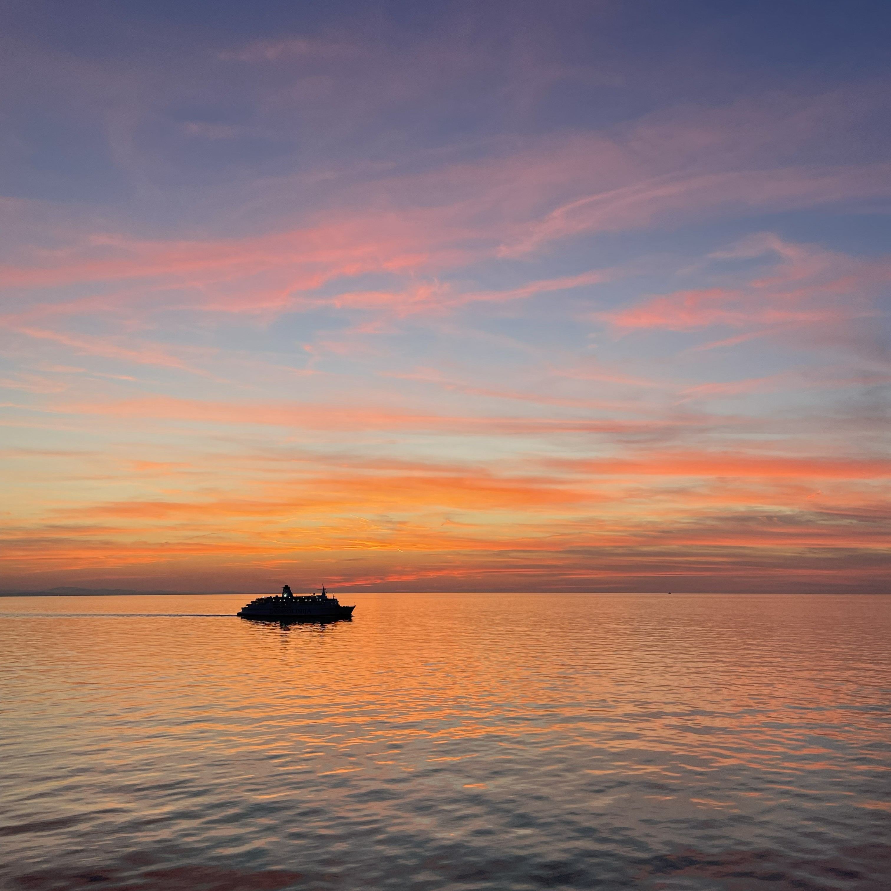
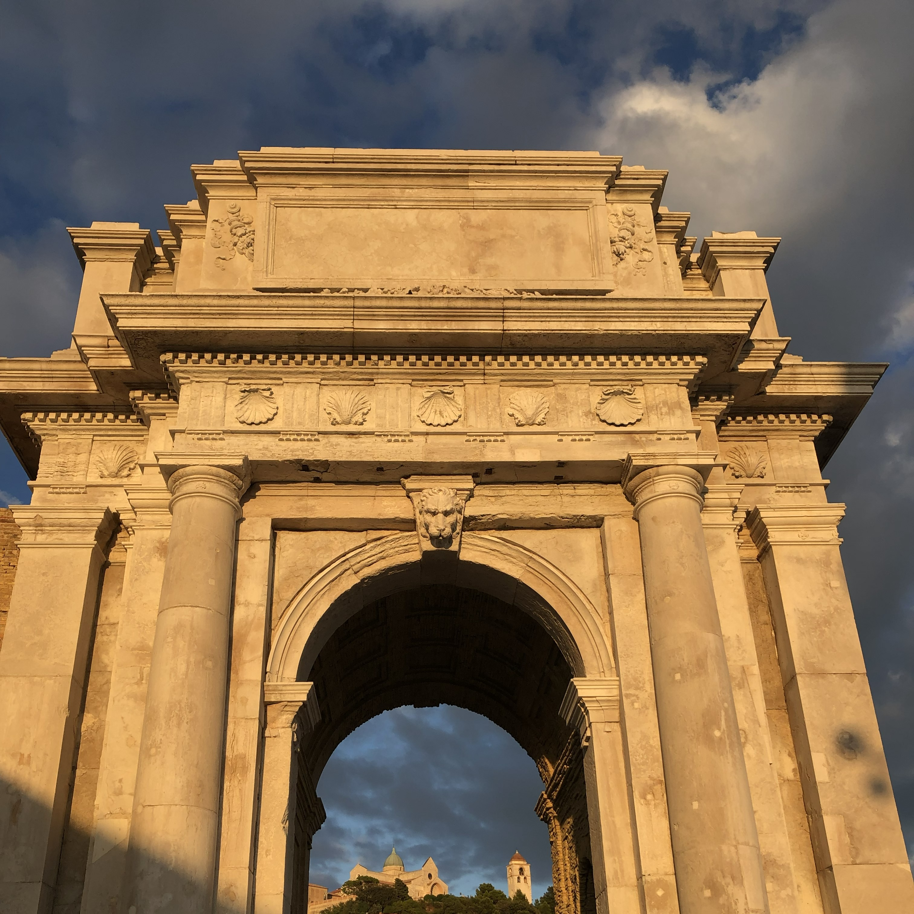

TRAMONTI
Sono particolarmente affascinata dai tramonti sul mare, per la loro capacità di trasmettere equilibrio e armonia attraverso la luce e i colori. Mi ispirano a osservare i dettagli e a cercare la stessa semplicità visiva e chiarezza anche nei miei progetti di design.

PAESAGGI
I paesaggi del Conero mi affascinano per la loro varietà e armonia naturale. Le scogliere, il mare e la luce che cambia durante il giorno creano un equilibrio visivo che mi ispira nella ricerca di semplicità e contrasto nel design.

ARCHITETTURE
L’Arco di Traiano è uno dei luoghi di Ancona che mi affascina di più. La sua semplicità equilibrata e il dialogo tra la pietra e il mare rappresentano per me un perfetto incontro tra storia e armonia visiva.